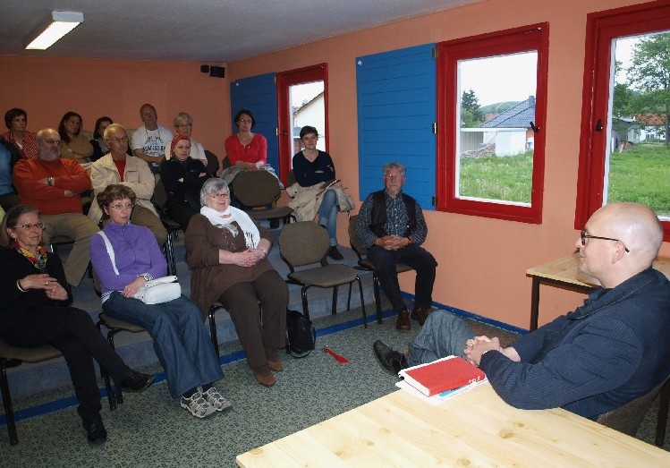
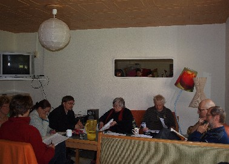
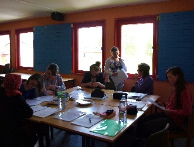
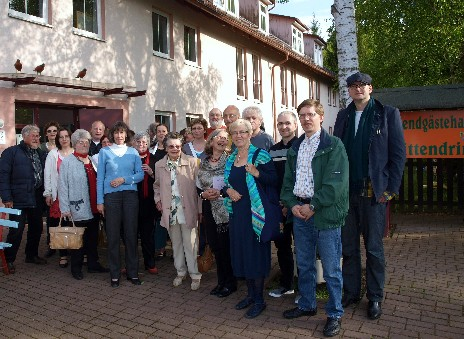
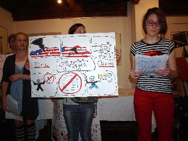
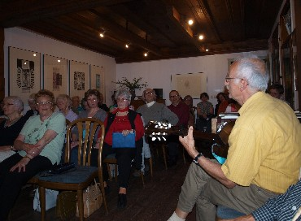
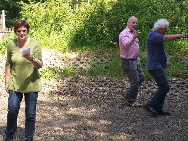

Zum 23. Mal trafen sich am Wochenende nach Himmelfahrt Autoren aus Südthüringen und der angrenzenden Region im Jugendgästehaus „Mittendrin" in Untermaßfeld zu Werkstatttagen. Zwei Tage lang wurden dabei neu entstandene Texte debattiert, Schreibaufgaben gestellt und deren Ergebnisse schon am Samstagabend in einer literarischen Soiree im Baumbachhaus Meiningen vorgestellt. Die Zusammenkunft stand diesmal unter dem Titel „NebenWelten". Prosa-Lektor Matthias Göritz aus Frankfurt/Main las schon am 18. Mai im Jugendgästehaus und brachte Ausschnitte aus seinem Roman „Der kurze Traum des Jakob Voss" zu Gehör. Die junge Schriftstellerin Nancy Hünger aus Erfurt leitete wieder die Lyrik-Gruppe. Ulrike Blechschmidt und Manuela Ploch widmeten sich der Jugendgruppe. Frisch entstandene Texte wurden im Literaturmuseum Baumbachhaus Meiningen vorgestellt. Die musikalische Umrahmung oblag Talenten der Meininger Musikschule unter Leitung von Gudrun Asmus. Cornelia Thiele vom Kieck-Theater Weimar leitete ein interaktives Seminar zum wirkungsvollen Darbieten von Literatur.








